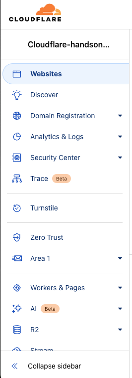
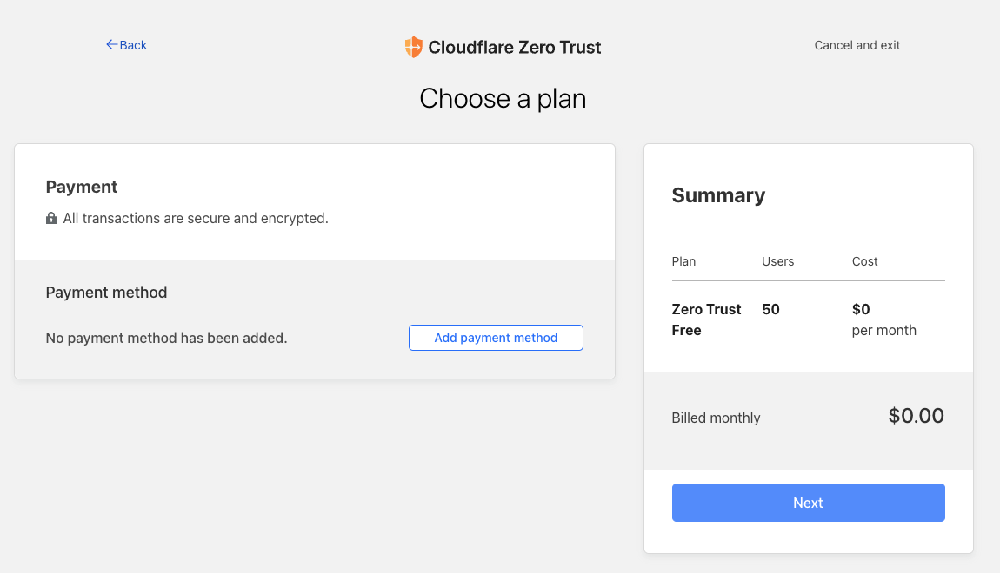
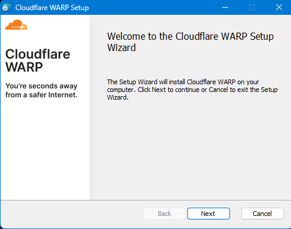

Last Updated: 2024-01-24
Cloudflare Zero Trust - Client
クライアントをCloudflareのネットワークまでWireGuard VPNでトンネルセッションを貼ることで、Cloudflareのネットワークを使ってインターネットに接続するサービスです。
Cloudflare アカウント
Cloudflareアカウントを作成します。
既にアカウントを所有している場合は本手順をスキップしてください。
Sign-up
メールアドレス、パスワード（ルールに準拠）、Cloudflare Turnstileのチェックを通してください。

Complete
メールアドレス宛に本人確認を行うURLが送付されているので確認してください。

（任意）MFA設定
Muilti-Factor Authenticator（MFA：多要素）認証の設定を推奨します。
（任意）言語設定
TBD
初期設定

チーム名は後ほどWARPクライアントからZero Trustにサインインする際に必要となります
変更は後ほど記載する画面でも変更可能です

プラン選択





ダッシュボード画面の表示
Cloudflare Zero Trustの初期画面が表示されればOK


Account
登録した情報を確認するメニューです。
Custom Pages
Team domain
初期登録したチーム名を変更する場合はこちらです
今回は変更しません
Block page
Gateway Block時に表示する画面の設定がこちらです
今回は変更しません
Login Page
WARPからZero Trustにログインする画面の設定がこちらです
今回は変更しません
Network
取得するログの方針を変更する設定がこちらです
今回は変更しません
Authentication
認証方式を変更する設定がこちらです。
今回は変更しません
WARP Client
Plan変更に遷移してしまうので何もしません
Downloads
ルート証明書、WARPクライアント、Cloudflaredなどがダウンロードできます
今は何もしません
利用する端末の設定
My Team > Devices を進みます

Connect a Device を押します
Create an enrollment policy を押します
裏側でdefault policyが自動作成されます
今回利用するドメインを入力します
@gmail.com , @yahoo.co.jp などです
今回はWindows を選択します
以下の画面が別タブで開きます
https://install.appcenter.ms/orgs/cloudflare/apps/1.1.1.1-windows-1/distribution_groups/release

DOWNLOAD を押します
MSIファイルになっているのでダブルクリックしてインストールを進めます


チーム名をコピーします
証明書のダウンロード画面が出てきますので、念のためダウンロードしてください
AWS にアクセス
Windows Serverを起動
TBD
WARP をインストール


右下の⚙マークを押します

チームドメインを入力
アカウント タブを選択すると、右下に Cloudflare Zero Trustにログインが出てきます
自身で設定したチーム名を入力します
サインイン
今回利用するEmail Addressを入力してください

送られてきたメールに記載されているPINを入力します
認証が通るとWARPを開こうとします

ここでWARPからZero Trustに表示が変わります
Zero Trustの通信が有効か確認

curl https://ipinfo.io/
"Org": が現在のプロバイダになっている状態
トグルスイッチをONにして接続します
curl https://ipinfo.io/
"org": "AS13335 Cloudflare, Inc.",
Gateway Policyの変更
Gatewayで通信を見てアクセス許可（Allow）、禁止（Block）、透過（Bypass）など設定が可能です。
今回は、Zero Trustが有効な間はTwitterの通信をブロックして通常利用できないようにします。
Edge で Twitter にアクセス
https://twitter.com/

Gateway Policyを変更

TwitterをBlockします
Display block pageを☑にします

Save Policy を押すとDefault DNS Locationが未登録のため有効化できない警告がでるので、
そのまま、Gateway/Location を押します

Add A Locationをおします

ここまで設定した後に、Twitter にアクセスすると、タイムラインやPostができない状態になります。

macOS・ESETの環境
ESETを一時的に通信の対話モードへ切り替えて、WARPの接続を起動して通信を発生させて、追加させる対応を実施しました。

iPad・iPhone
設定 > 一般 > VPNとデバイス管理 でCloudflare for Teams ECC Certificate Authority をインストール
設定 > 一般 > 情報 > 証明書信頼設定 で Cloudflare for Teams ECC Certificate Authority を信頼


Andoroid
アプリをインストールすると証明書の信頼確認が促されるポップアップが表示されたので承認して完了でした。